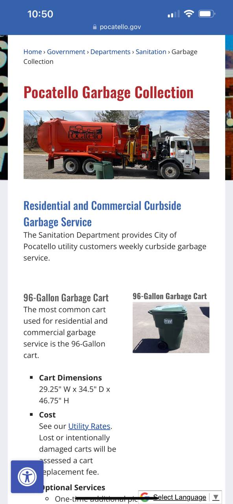
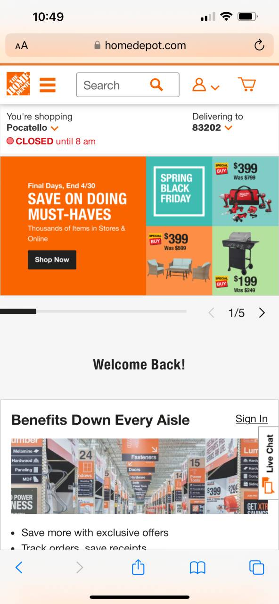
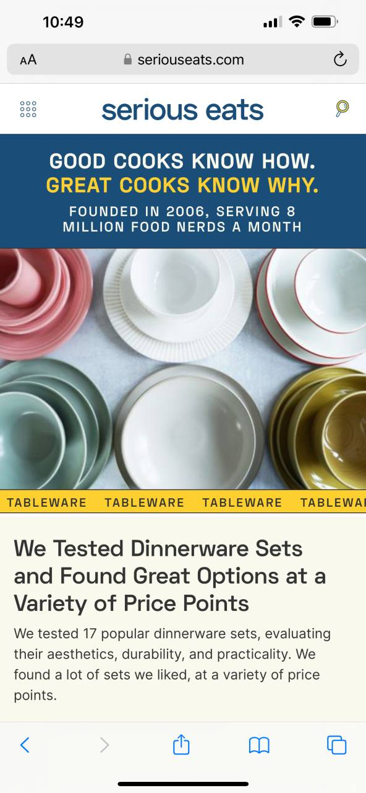

Rule of Thirds
City of Pocatello Garbage Collection
www.pocatello.gov/725/Garbage-Colllection
This is hard to capture on a mobile site. The rule of thirds is about the human eye. It has application in art, photography, architecture, web design and many others. The human eye tends to focus on the page in thirds. Putting the content at the intersection of those thirds, horizontally and veritcally, is going to give the best view to the viewer.
PARC: Proximity
Home Depot
www.homedepot.com
Proximity is the grouping of related elements on a page. As you scroll through the home depot's website, the buttons, descriptions, photos, etc are all in the same place. You don't have to spend time searching for the buttons because it's consisten.
PARC: Alignment
Serious Eats
www.seriouseats.com
Alignment, when used correctly, helps to create a connection between related elements on a page. The serious eats website does a good job of differentiating unrelated content and making clear what is related. Even though an element might not fit entirely on a phone's screen, it's easy to tell what belongs to the previous section and what belongs to the next section. Even though they're all in the same 'column.'